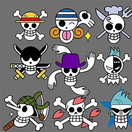

About Pirate Wear
A Love of The Sea
The sea has always called to me. Being able to navigate the seas was aways a dream of mind. However, even on dry land I would
like to show my love of the sea and the slight rebel side of this Sailor.
Pirate Things
While the I have always wanted to sail the seas, I never could decide on how I would get there. I was sure like in my favorite
anime, One Piece, that I would sail at some point but that was a problem for the future. I did join the United State of America's
Navy and became a Sailor. I may not have been as cool as Commander Chandler, but I did wear the same uniform. At least for a time.

The Closest Thing to A Pirate